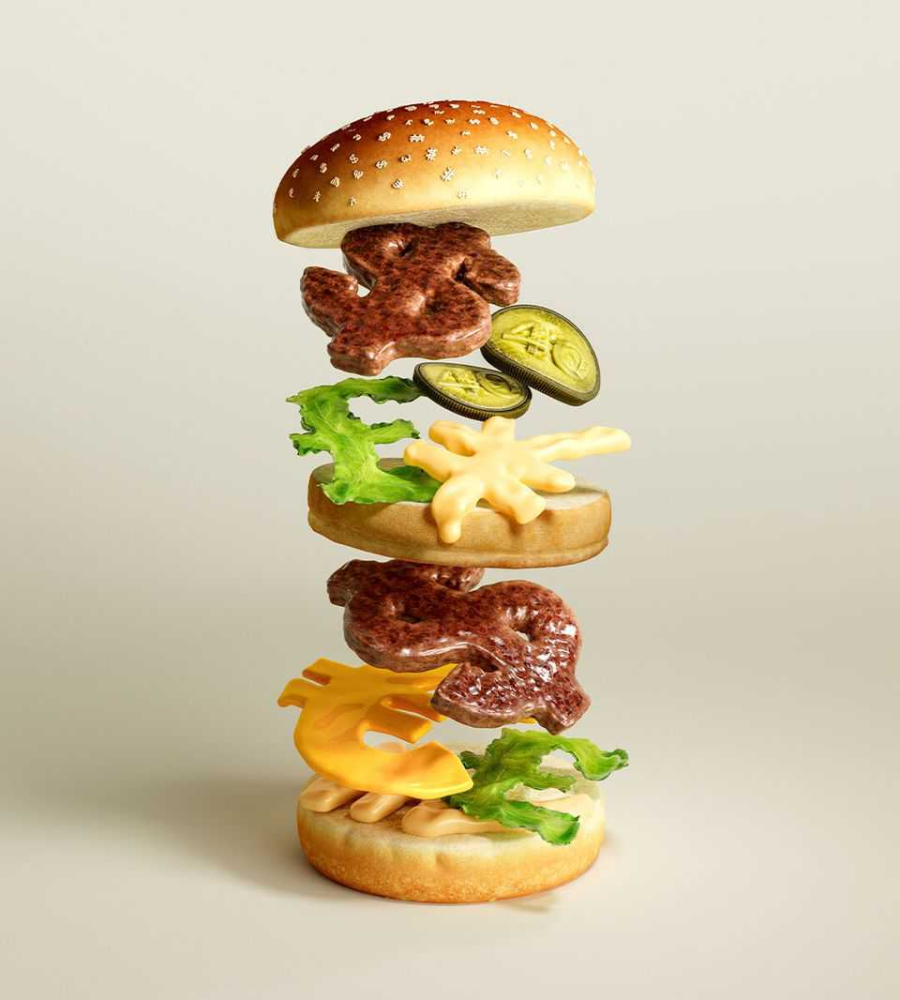

What the Big Mac index reveals about a global currency beef
It highlights economic problems—and helps explain how to solve them

Jul 30th 2026
LOCKED IN A vault near Paris, ensconced in three bell jars, sits a small cylinder of platinum alloy, forged in London in 1879. Known as Le Grand K, it long served as the definitive standard for measuring the kilogram. There is no universal standard for measuring the monetary heft or purchasing power of currencies. But The Economist has a favourite candidate. It weighs up to 240g. It is ensconced in a cardboard box. And you can find it under two Golden Arches. Our version of Le Grand K is the McDonald’s Big Mac.
The Big Mac index we forged in London in 1986 will be 40 years old in September. What began as a playful thought experiment has taken on a life of its own. It has amused readers, intrigued currency traders and irritated central banks. It has also attracted critics who think fast food has nothing to say about global economics. It was born in an era of high monetary diplomacy, when policymakers fretted that the world’s most important currencies were horribly misaligned, inviting financial calamity or trade protectionism. Forty years on, similar debates are raging once again, this time about the dollar, yuan and yen. In a world of currency tumult and controversy, our palatable guide to exchange rates is as valuable as ever.
Fast food may seem an eccentric choice as a standard of value. But the Big Mac has unique advantages. You can buy it almost anywhere and it tastes much the same everywhere. McDonald’s calibrates its appearance, texture, flavour and smell with the same diligence that scientists lavished on that 1kg cylinder in Paris. Wherever you purchase your Big Mac, you are buying much the same thing.
That makes it a good measure of the bang you can get for your buck. In America $100 buys about 16 Big Macs. That is roughly the same burger-buying power as 100 euros, 426 Chinese yuan, or 8,039 Japanese yen. Yet $100 in fact buys about €87 in the foreign-exchange markets, or 677 yuan, or over ¥16,000, showing how far from their purchasing power the world’s currencies have strayed.
The index does not satisfy everyone. Some think it’s too narrow—what could one product possibly say about an entire economy? Others think it’s too broad—by some estimates, inputs that cannot be traded easily across borders, such as labour and retail space, account for over half the Big Mac’s cost. Some doubt its predictive value for exchange rates, others doubt its descriptive value as an indicator of a currency’s true worth, and a third camp doubt its prescriptive value as a guide to where exchange rates ought to be. Some just hate the puns.
To judge the oomph of currencies, it is obviously better to compare the price of thousands of products, rather than just one. But the elaborate measures of purchasing power assembled by organisations like the World Bank also have their flaws. Those global figures appear only once every three years and with a long lag—for example, 2021’s numbers came out only in 2024. Compiling them is one of the largest statistical initiatives in the world. They are also hard to verify and understand. The Big Mac index is quicker, fresher and easier to digest. And yet despite that, our results line up reasonably well with theirs. Of the 54 economies that appear in both our index and the World Bank’s database, only seven were deemed cheap in one but expensive in the other.
That is because the Big Mac, though a single product, has over 60 distinct ingredients, from beef to xanthan gum. It also draws on labour and property markets wherever it is made and served. The Big Mac index’s predictive record is admittedly mixed. But it showed correctly, for example, that the euro was overvalued when it came into being in 1999.
What to make of the index now once again finding that the euro, yuan and yen are out of kilter? Earlier this year, the IMF suggested China’s currency was 16% weaker than economic fundamentals implied. This competitive edge has helped the country rack up enormous trade surpluses in goods, which reached almost $1.2trn last year. President Emmanuel Macron of France has described these imbalances as “unbearable” and a mortal threat to European industry. He has threatened strong measures if China does not relent.
Donald Trump, America’s president, has often been the world’s most strident critic of cheap Asian currencies. In January he described how he “used to fight like hell” with China and Japan, which “always wanted to…devalue, devalue, devalue”. Such talk from the White House has ebbed lately. But currency traders are abuzz every few months with rumours of a new Plaza Accord, the 1980s pact to devalue the dollar—despite the extreme unlikelihood that such an agreement could work today.
The Big Mac index can play a role in this high-stakes debate. It makes clear that a cheap real exchange rate means a dollar price of burgers below America’s price. This imbalance goes along with low domestic consumption on China and a yawning budget deficit in America—and the flows of capital needed to sustain them. For the yuan to improve its standing in our index, it has two paths. Either the currency must strengthen or China’s Big Macs must rise in price, faster than they rise in America.
A sharp rise in China’s yuan could undermine the country’s growth and worsen its deflationary tendencies). It might bring about a relevelling of global trade, but it would be a levelling-down. Better for China’s policymakers to stimulate the economy so that wages and prices rise more quickly. That would make the yuan less undervalued, even if its exchange rate remained steady. Economists would call it a rise in the “real”, price-adjusted exchange rate.
About 10km from the Elysée Palace, Le Grand K still sits in its vault. It was retired in 2019 after 130 years of service. If currencies did ever move into close alignment with their purchasing power, the Big Mac index might also become redundant. But for as long as currencies remain unmoored, and the Big Mac remains consistent, our index will serve a useful purpose—however distasteful its critics may find it. ■